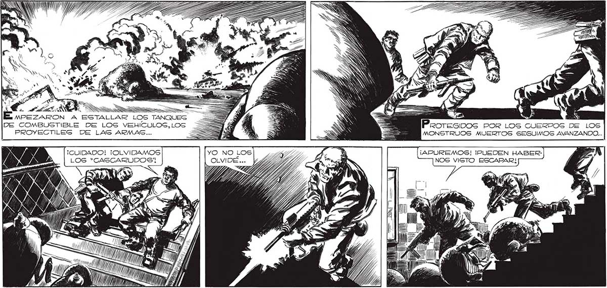
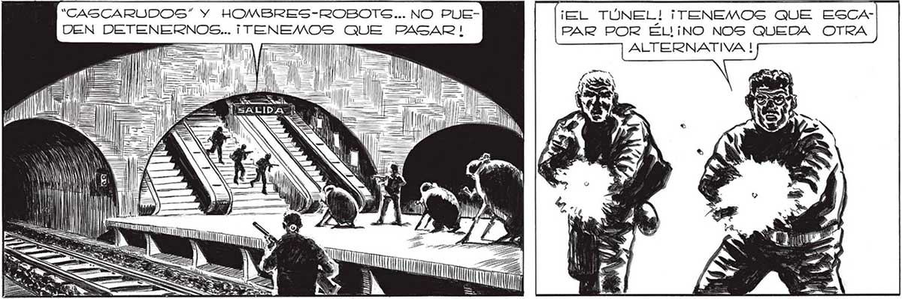

PRN 7D ES . MPEZARON A ESTALLAR LOS TANQUES Y L =$ DE COMBUSTIBLE DE LOS VEHIÍCULOS,LOS _= ST =$ O E — Peoresibos POr Los CUERPOS De LOS PROYECTILEG DE LAS ARMAS... => > 7 E = MONSTRUOS MUERTOS SEGUIMOS AVANZANDO... LOS “CASCARUODOS” N y Fe » Y li 0000100 MTI YN MI. > nee "CASCARUDOS” Y HOMBRES-ROBOTG... NO PUEDEN DETENERNOS... ¡TENEMOS ¡8 TÚNEL! ¡TENEMOS QUE ESCAPAR POR ÉL!¡NO NOS QUEDA OTRA NI TT << | a sf. Sl dll Consecuimos PASAR...

